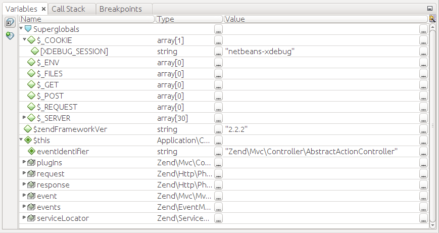

Watching Variables
When the PHP interpreter is paused, you can conveniently watch the values of PHP variables. A simple way to browse a variable is just positioning the mouse cursor over the variable name inside of the code and waiting for a second. If the variable value can be evaluated, it will be displayed inside of a small pop up window.
Another way to watch variables is through the Variables window (shown in figure B.10), which is displayed in the bottom part of NetBeans window. The Variables window has three columns: Name, Type and Value.
 Figure B.10. Variables window
Mainly, you will be faced with three kinds of variables: super globals, locals and $this:
Super global variables are special PHP variables like
$_GET,$_POST,$_SERVER,$_COOKIESand so on. They typically contain server information and parameters passed by the web browser as part of HTTP request.Local variables are variables living in the scope of the current function (or class method). For example, in the Hello World application, if you place a breakpoint inside of the
IndexController::aboutAction(), the variable$appNamewill be a local variable.$this variable points to the current class instance, if the current code is being executed in context of a PHP class.
Some variables can be "expanded" (to expand a variable, you need to click on a triangle icon to the left of variable's name). For example, by clicking and expanding $this variable, you can watch all fields of the class instance. If you expand an array variable, you will be able to watch array items.
Using the Variables window it is possible not only to watch variable's value, but also to change the value on the fly. To do that, place your mouse cursor over the value column and click over it. The edit box appears, where you can set the new value of the variable.